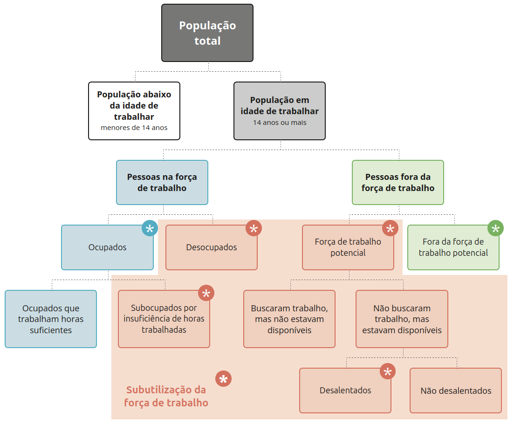

3 Sociodemográficos
Indicadores socioeconômicos desempenham um papel fundamental nas pesquisas de saúde pública, pois possibilitam uma compreensão mais abrangente dos determinantes sociais da saúde, das desigualdades sociais e suas repercussões na saúde das populações. Esses indicadores, que incluem variáveis como renda, escolaridade, ocupação e condições de moradia, são essenciais para identificar grupos vulneráveis, orientar políticas públicas e alocar recursos de forma mais equitativa. A utilização de indicadores socioeconômicos fortalece a abordagem multidimensional da saúde, promovendo uma análise dos determinantes sociais que influenciam o bem-estar coletivo.
Populações podem ser caracterizadas de diversas formas, incluindo características do contigente populacional, da sua renda, educação, domicílios e entorno, mercado de trabalho e condições de vida. Estas caracterizações básicas são utilizadas nas definições de indicadores sociodemográficos e são apresentadas a seguir.
3.1 Caracterização da população
3.1.1 Contigente populacional
Dados sobre o contingente populacional são utilizados em análises de saúde para refletir e relativizar a quantidade observada ou estimada de um determinado evento de saúde em relação a população à qual este evento está relacionado. Em geral, o quantitativo populacional é utilizado na preparação de indicadores, como taxas populacionais.
3.1.1.1 Faixa etária
A contingente populacional pode ser repartido em faixas etárias, possibilitando o cálculo de indicadores que reflitam condições específicas sobre fases da vida, como infância, adolescência, vida adulta e idosa, por exemplo.
A seguir, algumas classificações de faixas etárias comumente utilizados em estudos de saúde:
| Faixa etária 1 | Faixa etária 2 |
|---|---|
| Menor de 1 ano | Menor de 1 ano |
| De 1 a 4 anos | De 1 a 4 anos |
| De 5 a 9 anos | De 5 a 9 anos |
| De 10 a 14 anos | De 10 a 14 anos |
| De 15 a 19 anos | De 15 a 19 anos |
| De 20 a 29 anos | De 20 a 24 anos |
| De 25 a 29 anos | |
| De 30 a 39 anos | De 30 a 34 anos |
| De 35 a 39 anos | |
| De 40 a 49 anos | De 40 a 44 anos |
| De 45 a 49 anos | |
| De 50 a 59 anos | De 50 a 54 anos |
| De 55 a 59 anos | |
| De 60 a 69 anos | De 60 a 64 anos |
| De 65 a 69 anos | |
| De 70 a 79 anos | De 70 a 74 anos |
| De 75 a 79 anos | |
| 80 anos ou mais | 80 anos ou mais |
| Faixa etária | Classificação |
|---|---|
| De 0 a 6 dias | Período neonatal precoce |
| De 7 a 27 dias | Período neonatal tardio |
| De 28 a 364 dias | Período pós-neonatal |
A Organização Mundial da Saúde adota como referência para população idosa a idade de 65 anos. No Brasil, o Estatuto da Pessoa Idosa utiliza a idade de 60 anos como referência. Existe um projeto de lei visando alterar a idade de referência de 60 para 65 anos no Brasil.
3.1.1.2 Sexo
O sexo do indivíduo é um importante classificador da população. A princípio, o sexo se refere a características biológicas, como cromossomas, órgãos genitais e hormonas.
Por outro lado, classificações de gênero dão conta de uma maior complexidade de situações. A seguir, algumas classificações de gênero:
- Cisgênero: identidade de gênero corresponde ao sexo que lhe foi atribuído ao nascer em uma classificação binária (masculino ou feminino).
- Transgênero: identidade de gênero não corresponde ao sexo que lhe foi atribuído ao nascer.
- Não binário: pessoas que não se identificam como exclusivamente homem ou mulher, podendo se identificar com ambos, nenhum ou um terceiro gênero.
- Intersexual: pessoas com características sexuais que não se encaixam perfeitamente nas categorias típicas de masculino ou feminino, podendo ter uma combinação de características sexuais ou uma combinação incomum de cromossomos
3.1.1.3 Raça e cor
A classificação utilizada pelo Instituto Brasileiro de Geografia e Estatística (IBGE) para cor/raça é a seguinte:
- Preta
- Parda
- Branca
- Amarela
- Indígena
A raça/cor de uma pessoa não se relaciona apenas a sua cor da pele (colorismo), mas também a fatores sociais e de identidade. Em geral, a raça/cor deve ser autodeclarada.
3.1.1.4 Urbano e rural
O recorte do contingente populacional como rural ou urbano permite a comparação da saúde de populações que vivem em contextos sociais, econômicos e de acesso à saúde distintos.
O cálculo do contingente populacional urbano é realizado pelo IBGE à partir de definições territoriais de distritos sede nos municípios brasileiros. A população residente nos distritos sede é definida como urbana, e a população restante é definida como rural. Saiba mais sobre a metodologia do IBGE aqui.
A delimitação dos distritos sedes é realizada pelos próprios municípios e enviada para o IBGE. Em geral, esta delimitação pode ser afetada por interesses econômicos para a cobrança de taxas municipais. Propriedades em áreas urbanas pagam o Imposto sobre a Propriedade Predial e Territorial Urbana (IPTU), enquanto propriedades rurais pagam o Imposto Territorial Rural (ITR), que é, em geral, de menor valor.
Assim, é importante pensar sobre diferenças entre o urbano e o urbanizado, como neste estudo.
3.1.2 Renda
A renda é um importante fator de classificação populacional, podendo atuar como fator de proteção ou de risco em uma série de doenças e agravos.
Faixas de renda são utilizadas para dividir o contigente populacional em classes sociais, utilizando a renda familiar mensal como referência.
Em 2022, o IBGE dividiu a população em sete classes de rendimento:
| Número de salários mínimos | Renda familiar (R$) |
|---|---|
| Acima de 25 | 30.300,01 ou mais |
| De 15 a 25 | 18.180,01 a 30.300,00 |
| De 10 a 15 | 12.120,01 a 18.180,00 |
| De 6 a 10 | 7.272,01 a 12.120,00 |
| De 3 a 6 | 3.636,01 a 7.272,00 |
| De 2 a 3 | 2.424,01 a 3.636,00 |
| Até 2 | Até 2.424,00 |
Já a Associação Brasileira de Empresas de Pesquisa (Abep) propõe uma classificação denominada “Critério Brasil”, que é calculada em um sistema de pontos dado pelo grau de instrução, acesso a serviços públicos e acesso a uma série de características do domicilio (número de banheiros, por dentro outros) e a bens duráveis (número de automóveis e aparelhos de TV, dentro outros). O Critério Brasil apresenta a seguinte correspondência com a renda familiar média:
| Estrato socioeconômico | Renda média |
|---|---|
| A | R$ 26.811,68 |
| B1 | R$ 12.683,34 |
| B2 | R$ 7.017,64 |
| C1 | R$ 3.980,38 |
| C2 | R$ 2.403,04 |
| DE | R$ 1.087,77 |
3.1.3 Educação
A classificação da população segundo a educação em estudos de saúde possibilita observar como o acesso ao conhecimento possibilita melhores condições de vida e bem-estar para o indivíduo e sua família.
Este fator costuma ser classificado por níveis de escolaridade ou anos de estudo. Os níveis de escolaridade remetem as divisões educacionais como Educação Infantil, Ensino Fundamental, Ensino Médio, Ensino Superior e Pós-Graduação. Estas classes ainda podem ser subdivididas como “completo” e “incompleto” (ainda cursando ou suspenso). Contudo, a depender da época do levantamento do dado, estas classes podem ter diferentes nomenclaturas e não necessariamente compatíveis.
Outra forma de se classificar o acesso à educação é através da medida de anos de estudo, que é menos objetiva mas não enfrenta problemas de compatibilidade acima mencionados.
A seguir, uma comparação entre níveis de escolaridade e anos de estudo:
Antes da Reforma de 1971:
- Pré-escola – Duração de 3 anos / De 4 a 6 anos
- Escola primária – Duração de 4 anos / De 7 a 10 anos
- Ginásio – Duração de 4 anos / De 11 a 14 anos
- Colégio – Duração de 3 anos / De 15 a 17 anos
- Ensino Superior – Duração variável / Acima de 18 anos
Após a reforma de 1971:
- Pré-escola – Duração de 3 anos / De 4 a 6 anos
- 1º grau obrigatório – Duração de 8 anos / De 7 a 14 anos
- 2º grau obrigatório – Duração de 3 anos / De 15 a 17 anos
- Ensino Superior – Variável / Acima de 17 anos
Após a LDB 9.394/96:
- Educação Básica
- Educação Infantil
- Creche – Duração de 4 anos / De 0 a 3 anos
- Pré-escola – Duração de 3 anos / De 4 a 6 anos
- Ensino Fundamental (obrigatório) – Duração de 9 anos / De 6 a 14 anos
- Ensino Médio – Duração de 3 anos / De 15 a 17 anos
- Educação Infantil
- Educação Superior
- Cursos por área – Duração variável / Acima de 17 anos
3.1.4 Domicílios e entorno
A classificação da população segundo características do domicílio em que vivem e de seu entorno permite que estudos se aprofundem nas condições de vida da população.
A seguir, características do domicílio e entorno levantadas no Censo 2022 do IBGE.
Tipo de domicílio:
- Casa
- Casa de vila ou em condomínio
- Apartamento
- Habitação em casa de cômodos ou cortiço
- Habitação indígena sem paredes ou maloca
- Estrutura residencial permanente degradada ou inacabada
Ligação à rede geral de distribuição de água e principal forma de abastecimento de água:
- Possui ligação à rede geral e a utiliza como forma principal
- Possui ligação à rede geral, mas utiliza principalmente outra forma
- Possui ligação à rede geral, mas utiliza principalmente outra forma
- Poço profundo ou artesiano
- Poço raso, freático ou cacimba
- Fonte, nascente ou mina
- Carro-pipa
- Água da chuva armazenada
- Rios, açudes, córregos, lagos e igarapés
- Outra
- Poço profundo ou artesiano
- Não possui ligação com a rede geral
- Poço profundo ou artesiano
- Poço raso, freático ou cacimba
- Fonte, nascente ou mina
- Carro-pipa
- Água da chuva armazenada
- Rios, açudes, córregos, lagos e igarapés
- Outra
Canalização de água e principal forma de abastecimento de água:
- Rede geral de distribuição
- Canalizada até dentro da casa, apartamento ou habitação
- Canalizada, mas apenas no terreno
- Sem água canalizada
- Poço profundo ou artesiano
- Canalizada até dentro da casa, apartamento ou habitação
- Canalizada, mas apenas no terreno
- Sem água canalizada
- Poço raso, freático ou cacimba
- Canalizada até dentro da casa, apartamento ou habitação
- Canalizada, mas apenas no terreno
- Sem água canalizada
- Fonte, nascente ou mina
- Canalizada até dentro da casa, apartamento ou habitação
- Canalizada, mas apenas no terreno
- Sem água canalizada
- Carro-pipa
- Canalizada até dentro da casa, apartamento ou habitação
- Canalizada, mas apenas no terreno
- Sem água canalizada
- Água da chuva armazenada
- Canalizada até dentro da casa, apartamento ou habitação
- Canalizada, mas apenas no terreno
- Sem água canalizada
- Rios, açudes, córregos, lagos e igarapés
- Canalizada até dentro da casa, apartamento ou habitação
- Canalizada, mas apenas no terreno
- Sem água canalizada
- Outra
- Canalizada até dentro da casa, apartamento ou habitação
- Canalizada, mas apenas no terreno
- Sem água canalizada
Esgotamento sanitário:
- Rede geral, rede pluvial ou fossa ligada à rede
- Rede geral ou pluvial
- Fossa séptica ou fossa filtro ligada à rede
- Fossa séptica ou fossa filtro não ligada à rede
- Fossa rudimentar ou buraco
- Vala
- Rio, lago, córrego ou mar
- Outra forma
- Não tinham banheiro nem sanitário
Destino do lixo:
- Coletado
- Coletado no domicílio por serviço de limpeza
- Depositado em caçamba de serviço de limpeza
- Queimado na propriedade
- Enterrado na propriedade
- Jogado em terreno baldio, encosta ou área pública
- Outro destino
Características do entorno do domicílio:
- Capacidade máxima de circulação da via
- Caminhão ou ônibus
- Carro ou van
- Motocicletas, bicicletas e pedestres
- Aquavias
- Não declarado
- Via pavimentada
- Existência de bueiro / boca de lobo
- Existência de iluminação pública
- Existência de ponto de ônibus / van
- Existência de via sinalizada para bicicleta
- Existência de calçada / passeio
- Existência de obstáculo na calçada
- Existência de rampa para cadeirante
- Arborização
- Sem árvores
- De 1 a 2 árvores
- De 3 a 4 árvores
- 5 ou mais árvores
- Não declarado
3.1.5 Mercado de trabalho
O contingente populacional pode ser subdivido em diversos níveis hierárquicos de trabalho e emprego. A seguir, a classificação utilizada pelo IBGE em suas pesquisas:

Fonte: IBGE
Definições:
- Ocupados: empregados (do setor público ou privado, com ou sem carteira de trabalho assinada, ou estatutários), trabalhadores por conta própria, empregadores, trabalhadores domésticos (com ou sem carteira de trabalho assinada), e trabalhadores familiares auxiliares (pessoas que ajudam no trabalho de seus familiares sem remuneração).
- Subocupados por insuficiência de horas trabalhadas: trabalhadores que têm jornada de trabalho inferior a 40 horas semanais, mas gostariam de trabalhar mais horas e estão disponíveis para trabalhar
- Desocupados: pessoas que não estão trabalhando, porém tomaram alguma providência efetiva para encontrar trabalho e estão disponíveis para assumi-lo, caso encontrem.
- Força de trabalho potencial: Pessoas que não estão na força de trabalho, mas possuem um potencial para serem integradas a esta força.
- Fora da força de trabalho potencial: Dentre as pessoas que estão fora da força de trabalho, estão as donas de casa que não trabalham fora, adolescentes em idade escolar, aposentados e outras pessoas que não têm interesse ou condições de trabalhar.
- Desalentados: pessoas que gostariam de trabalhar e estariam disponíveis, porém não procuraram trabalho por acharem que não encontrariam.
3.1.6 Qualidade de vida
A Organização Mundial da Saúde define qualidade de vida como “a percepção do indivíduo de sua inserção na vida, no contexto da cultura e sistemas de valores nos quais ele vive e em relação aos seus objetivos, expectativas, padrões e preocupações”. Apesar de ser uma definição subjetiva, existem métodos objetivos para mensura-lá, como o Índice de Qualidade de Vida (IDH).
A seguir são apresentadas fichas de caracterização dos principais indicadores sociodemográficos seguindo a formulação da RIPSA. Aprofundamentos e outros indicadores podem ser encontrados em JANNUZZI (2006) e REDE INTERAGENCIAL DE INFORMAÇÃO PARA A SAÚDE (2008).
3.2 Indicadores demográficos
3.2.1 Razão de sexos
Fonte: REDE INTERAGENCIAL DE INFORMAÇÃO PARA A SAÚDE (2008)
Conceituação
Número de homens para cada grupo de 100 mulheres, na população residente em determinado espaço geográfico, no ano considerado.
Interpretação
- Expressa a relação quantitativa entre os sexos. Se igual a 100, o número de homens e de mulheres se equivalem; acima de 100, há predominância de homens e, abaixo, predominância de mulheres.
- O indicador é influenciado por taxas de migração e de mortalidade diferenciadas por sexo e idade.
Usos
- Analisar variações geográficas e temporais na distribuição da população por sexo.
- Subsidiar processos de planejamento, gestão e avaliação de políticas públicas nas áreas de saúde, educação, segurança e emprego.
- Auxiliar na compreensão de fenômenos sociais relacionados a essa distribuição (migrações, mercado de trabalho, organização familiar, morbi-mortalidade).
- Identificar necessidades de estudos de gênero sobre os fatores condicionantes das variações encontradas.
Limitações
Imprecisões da base de dados utilizada para o cálculo do indicador, relacionadas à coleta de dados demográficos ou à metodologia empregada para elaborar estimativas e projeções populacionais.
Fonte de dados
IBGE
- Censo Demográfico, previsto para ser realizado a cada 10 anos.
- Contagem da população.
- Projeções demográficas a partir de bases censitárias, elaboradas anualmente para o Tribunal de Contas da União e adotadas oficialmente pelo país.
- Projeção da população do Brasil por sexo e idade.
- Estimativas anuais e mensais da população do Brasil e das Unidades da Federação.
- Estimativas a partir de pesquisas amostrais (PNAD).
Método de cálculo
\[ \frac{\text{Número de residentes do sexo masculino}}{\text{Número de residentes do sexo feminino}} \times 100 \]
Categorias sugeridas para análise
- Unidade geográfica: Brasil, grandes regiões, estados, Distrito Federal, regiões metropolitanas e municípios das capitais.
- Faixa etária: menor de 1 ano, 1 a 4 e, a partir desta faixa etária, agregações qüinqüenais até 79 anos, finalizando com o grupo de 80 e mais anos de idade.
- Situação do domicílio: urbana e rural.
3.2.2 Taxa de crescimento da população
Fonte: REDE INTERAGENCIAL DE INFORMAÇÃO PARA A SAÚDE (2008)
Conceituação
- Percentual de incremento médio anual da população residente em determinado espaço geográfico, no período considerado.
- O valor da taxa refere-se à média anual obtida para um período de anos compreendido entre dois momentos, em geral correspondentes aos censos demográficos.
Interpretação
- Indica o ritmo de crescimento populacional.
- A taxa é influenciada pela dinâmica da natalidade, da mortalidade e das migrações.
Usos
- Analisar variações geográficas e temporais do crescimento populacional.
- Realizar estimativas e projeções populacionais, para períodos curtos.
- Subsidiar processos de planejamento, gestão e avaliação de políticas públicas específicas (dimensionamento da rede física, previsão de recursos, atualização de metas).
Limitações
- Imprecisões da base de dados utilizada para o cálculo do indicador, relacionadas à coleta de dados demográficos ou à metodologia empregada para elaborar estimativas e projeções populacionais.
- A utilização da taxa em projeções populacionais para anos distantes do último censo demográfico pode não refletir alterações recentes da dinâmica demográfica. Essa possibilidade tende a ser maior em populações pequenas.
Fonte de dados
IBGE.
- Censo Demográfico, previsto para ser realizado a cada 10 anos.
- Projeção da população do Brasil por sexo e idade.
- Estimativas anuais e mensais da população do Brasil e das Unidades da Federação.
Método de cálculo
As estimativas de crescimento da população são realizadas pelo método geométrico. Em termos técnicos, para se obter a taxa de crescimento (\(r\)), subtrai-se 1 da raiz enésima do quociente entre a população final (\(Pt\)) e a população no começo do período considerado (\(P_0\)), multiplicando-se o resultado por 100, sendo \(n\) igual ao número de anos no período.
\[ r = \left[ \sqrt[n]{\frac{P_t}{P_0}} \times 100 \right] \]
Categorias sugeridas para análise
Unidade geográfica: Brasil, grandes regiões, estados, Distrito Federal, regiões metropolitanas e municípios das capitais.
3.2.3 Índice de envelhecimento
Fonte: REDE INTERAGENCIAL DE INFORMAÇÃO PARA A SAÚDE (2008)
Conceituação
Número de pessoas de 60 e mais anos de idade, para cada 100 pessoas menores de 15 anos de idade, na população residente em determinado espaço geográfico, no ano considerado.
Interpretação
- Razão entre os componentes etários extremos da população, representados por idosos e jovens.
- Valores elevados desse índice indicam que a transição demográfica encontra-se em estágio avançado.
Usos
- Acompanhar a evolução do ritmo de envelhecimento da população, comparativamente entre áreas geográficas e grupos sociais.
- Contribuir para a avaliação de tendências da dinâmica demográfica.
- Subsidiar a formulação, gestão e avaliação de políticas públicas nas áreas de saúde e de previdência social.
Limitações
Imprecisões da base de dados utilizada para o cálculo do indicador, relacionadas a falhas na declaração da idade nos levantamentos estatísticos ou à metodologia empregada para elaborar estimativas e projeções populacionais.
Fonte de dados
IBGE.
- Censo Demográfico, previsto para ser realizado a cada 10 anos.
- Contagem da população.
- Projeções demográficas a partir de bases censitárias, elaboradas anualmente para o Tribunal de Contas da União e adotadas oficialmente pelo país.
- Projeção da população do Brasil por sexo e idade.
- Estimativas anuais e mensais da população do Brasil e das Unidades da Federação.
- Estimativas a partir de pesquisas amostrais (PNAD).
Método de cálculo
\[ \frac{\text{Número de pessoas residentes de 60 e mais anos de idade}}{\text{Número de pessoas residentes com menos de 15 anos de idade}} \times 100 \]
Categorias sugeridas para análise
Unidade geográfica: Brasil, grandes regiões, estados, Distrito Federal, regiões metropolitanas e municípios das capitais.
3.2.4 Taxa de fecundidade
Fonte: REDE INTERAGENCIAL DE INFORMAÇÃO PARA A SAÚDE (2008)
Conceituação
- Número médio de filhos nascidos vivos, tidos por uma mulher, por faixa etária específica do período reprodutivo, na população residente em determinado espaço geográfico, no ano considerado.
- A taxa também pode ser apresentada por grupo de mil mulheres em cada faixa etária.
Interpretação
Mede a intensidade de fecundidade a que as mulheres estão sujeitas em cada grupo etário do período reprodutivo (de 15 a 49 anos de idade).
Usos
- Analisar perfis de concentração da fecundidade por faixa etária. n Detectar variações das taxas nos grupos de maior risco reprodutivo.
- Calcular medidas sintéticas de fecundidade (taxa de fecundidade total, taxa bruta de reprodução e taxa líquida de reprodução).
- Possibilitar o estudo dinâmico da fecundidade, mediante análise longitudinal.
- Formular hipóteses de projeções populacionais.
- Subsidiar processos de planejamento, gestão e avaliação da atenção materno/infantil (oferta de serviços e ações para grupos de risco).
Limitações
- Imprecisões da base de dados utilizada para o cálculo do indicador, relacionadas à coleta de dados demográficos ou à metodologia empregada para elaborar estimativas e projeções populacionais.
- Em função da subenumeração de dados em muitas áreas do país, o número de nascidos vivos obtido de sistemas de registro contínuo está sujeito a correções para o cálculo da taxa, sendo requeridos métodos indiretos para estimar o número de nascimentos. Essa correção dificilmente está disponível para áreas geográficas pequenas.
- O cálculo do indicador para anos intercensitários depende da disponibilidade de estimativas confiáveis do número de mulheres por faixas etárias do período reprodutivo.
Fonte de dados
- Ministério da Saúde/ Secretaria de Vigilância em Saúde: Sistema de Informações sobre Nascidos Vivos (Sinasc).
IBGE: Censo Demográfico, Contagem da População, Pesquisa Nacional por Amostra de Domicílios (PNAD), estatísticas do Registro Civil e estimativas e projeções demográficas.
Método de cálculo (direto)
\[ \frac{\text{Número de filhos nascidos vivos de mães residentes, de determinada faixa etária}}{\text{População total feminina residente, desta mesma faixa etária}} \]
Categorias sugeridas para análise
- Unidade geográfica: Brasil, grandes regiões, estados e Distrito Federal.
- Faixa etária de mães: 15 a 19, 20 a 24, 25 a 29, 30 a 34, 35 a 39, 40 a 44 e 45 a 49 anos de idade.
3.2.5 Taxa de natalidade
Fonte: REDE INTERAGENCIAL DE INFORMAÇÃO PARA A SAÚDE (2008)
Conceituação
Número de nascidos vivos, por mil habitantes, na população residente em determinado espaço geográfico, no ano considerado.
Interpretação
- Expressa a intensidade com a qual a natalidade atua sobre uma determinada população.
- A taxa bruta de natalidade é influenciada pela estrutura da população, quanto à idade e ao sexo.
- As taxas brutas de natalidade padronizadas por uma estrutura de população padrão permitem a comparação temporal e entre regiões.
- Em geral, taxas elevadas estão associadas a condições socioeconômicas precárias e a aspectos culturais da população.
Usos
- Analisar variações geográficas e temporais da natalidade.
- Possibilitar o cálculo do crescimento vegetativo ou natural da população, subtraindo-se, da taxa bruta de natalidade, a taxa bruta de mortalidade.
- Contribuir para estimar o componente migratório da variação demográfica, correlacionando-se o crescimento vegetativo com o crescimento total da população.
- Subsidiar processos de planejamento, gestão e avaliação de políticas públicas relativas à atenção maternoinfantil.
Limitações
- Devido à subenumeração de nascidos vivos, o uso de dados derivados de sistemas de registro contínuo está condicionado a correções, freqüente em áreas menos desenvolvidas.
- A base de dados demográficos utilizada para o cálculo do indicador pode apresentar imprecisões inerentes à coleta de dados ou à metodologia empregada para elaborar estimativas populacionais.
- As projeções demográficas perdem precisão à medida que se distanciam dos anos de partida das projeções.
- Para comparar taxas entre populações de composição etária distinta, recomenda-se a prévia padronização de suas estruturas. As taxas padronizadas devem ser utilizadas apenas para análises comparativas.
- A correlação desse indicador com a fecundidade exige cautela. Além de se referir apenas à população feminina, a taxa de fecundidade não é influenciada por variações na sua composição etária.
Fonte de dados
- Ministério da Saúde/Secretaria de Vigilância em Saúde: Sistema de Informações sobre Nascidos Vivos (Sinasc).
- IBGE: Censo Demográfico, Contagem da População, Pesquisa Nacional por Amostra de Domicílios (PNAD), estatísticas do Registro Civil e estimativas e projeções demográficas.
Método de cálculo
\[ \frac{\text{Número total de nascidos vivos residentes}}{\text{População total residente}} \times 1000 \]
Categorias sugeridas para análise
Unidade geográfica: Brasil, grandes regiões, estados e Distrito Federal.
3.2.6 Esperança (expectativa) de vida ao nascer
Fonte: REDE INTERAGENCIAL DE INFORMAÇÃO PARA A SAÚDE (2008)
Conceituação
Número médio de anos de vida esperados para um recém-nascido, mantido o padrão de mortalidade existente na população residente, em determinado espaço geográfico, no ano considerado.
Interpretação
- Expressa o número médio de anos que se esperaria que um recém-nascido vivesse.
- Representa uma medida sintética da mortalidade, não estando afetada pelos efeitos da estrutura etária da população, como acontece com a taxa bruta de mortalidade.
- O aumento da esperança de vida ao nascer sugere melhoria das condições de vida e de saúde da população.
Usos
- Analisar variações geográficas e temporais na expectativa de vida da população.
- Contribuir para a avaliação dos níveis de vida e de saúde da população.
- Subsidiar processos de planejamento, gestão e avaliação de políticas de saúde e de previdência social, entre outras, relacionadas com o aumento da expectativa de vida ao nascer (oferta de serviços, atualização de metas, cálculos atuariais).
Limitações
- Imprecisões relacionadas a falhas na declaração da idade nos levantamentos estatísticos ou à metodologia empregada para elaborar estimativas e projeções populacionais na base de dados utilizada para o cálculo do indicador.
- Para o cálculo da esperança de vida, são exigidas informações confiáveis de óbitos classificados por idade. Quando a precisão dos dados de sistemas de registro contínuo não é satisfatória, o cálculo deve basear-se em procedimentos demográficos indiretos, aplicáveis a áreas geográficas abrangentes.
Fonte de dados
IBGE: Censo Demográfico, Contagem da População, Pesquisa Nacional por Amostra de Domicílios (PNAD), estimativas e projeções demográficas.
Método de cálculo
A partir de tábuas de vida elaboradas para cada área geográfica, toma-se o número correspondente a uma geração inicial de nascimentos (\(l_0\)) e determina-se o tempo cumulativo vivido por essa mesma geração (\(T_0\)) até a idade limite. A esperança de vida ao nascer é o quociente da divisão de \(T_0\) por \(l_0\).
Categorias sugeridas para análise
- Unidade geográfica: Brasil, grandes regiões, estados e Distrito Federal.
- Sexo: masculino e feminino.
3.3 Indicadores de educação
3.3.1 Taxa de analfabetismo
Fonte: REDE INTERAGENCIAL DE INFORMAÇÃO PARA A SAÚDE (2008)
Conceituação
Percentual de pessoas com 15 e mais anos de idade que não sabem ler e escrever pelo menos um bilhete simples, no idioma que conhecem, na população total residente da mesma faixa etária, em determinado espaço geográfico, no ano considerado.
Interpretação
Mede o grau de analfabetismo da população adulta.
Usos
- Analisar variações geográficas e temporais do analfabetismo, identificando situações que podem demandar necessidade de avaliação mais profunda.
- Dimensionar a situação de desenvolvimento socioeconômico de um grupo social em seu aspecto educacional.
- Propiciar comparações nacionais e internacionais.
- Contribuir para a análise das condições de vida e de saúde da população, utilizando esse indicador como proxy da condição econômico-social da população. A atenção à saúde das crianças é influenciada positivamente pela alfabetização da população adulta, sobretudo das mães.
- Subsidiar processos de planejamento, gestão e avaliação de políticas públicas de saúde e de educação. Pessoas não alfabetizadas requerem formas especiais de abordagem nas práticas de promoção, proteção e recuperação da saúde.
Limitações
- A Pesquisa Nacional por Amostra de Domicílios (PNAD), uma das fontes usualmente utilizadas para construir esse indicador, não cobre a zona rural da região Norte (exceto o estado do Tocantins) até 2003 e não permite a desagregação dos dados por município.
- Uma vez que a amostra da PNAD não foi desenhada para ser representativa para todas as cores/raças, os indicadores para índios, amarelos e pretos devem ser vistos com muita cautela, pois estes grupos são muito pequenos em alguns estados e regiões. Quanto aos brancos e pardos, suas amostras são mais robustas, oferecendo maior garantia de uso.
Fonte de dados
IBGE: Pesquisa Nacional por Amostra de Domicílios (PNAD).
Método de cálculo
\[ \frac{\text{Número de pessoas residentes de 15 e mais anos de idade que não sabem ler e escrever um bilhete simples, no idioma que conhecem}}{\text{População total residente desta faixa etária}} \times 100 \]
Categorias sugeridas para análise
- Unidade geográfica: Brasil, grandes regiões, estados, Distrito Federal e regiões metropolitanas. Municípios das capitais, em anos censitários.
- Faixa etária: 15 a 24 anos, 25 a 59 anos e 60 e mais anos de idade.
- Sexo: masculino e feminino.
- Situação do domicílio: urbana e rural.
- Cor/raça, conforme a classificação do IBGE: branca, preta, amarela, parda e indígena.
3.4 Indicadores de trabalho
3.4.1 Taxa de desemprego
Fonte: REDE INTERAGENCIAL DE INFORMAÇÃO PARA A SAÚDE (2008)
Conceituação
- Percentual da população residente economicamente ativa que se encontra sem trabalho na semana de referência, em determinado espaço geográfico, no ano considerado.
- Define-se como População Economicamente Ativa (PEA) o contingente de pessoas de 10 e mais anos de idade que está trabalhando ou procurando trabalho.
Interpretação
- Mede o grau de insucesso das pessoas que desejam trabalhar e não conseguem encontrar uma ocupação no mercado de trabalho (desemprego aberto).
- Taxas elevadas de desemprego resultam na perda do poder aquisitivo e na possível desvinculação do sistema de seguro social e de algum plano de saúde de empresa, o que pressupõe aumento da demanda ao Sistema Único de Saúde.
Usos
- Analisar variações geográficas e temporais na distribuição do desemprego, identificando tendências e situações de desigualdade que podem demandar a realização de estudos especiais.
- Subsidiar a análise da condição social, identificando oscilações do mercado de trabalho.
- Contribuir para a análise da situação socioeconômica da população, identificando estratos que requerem maior atenção de políticas públicas de emprego, saúde, educação e proteção social, entre outras.
Limitações
- A informação está baseada na “semana anual de referência” em que foi realizada a pesquisa, refletindo apenas a desocupação informada para aquele período.
- Não mede aspectos qualitativos do desemprego.
- A fonte usualmente utilizada para construir o indicador (PNAD) não cobre a zona rural da região Norte (exceto em Tocantins) até 2003 e não permite a desagregação dos dados por município.
- Uma vez que a amostra da PNAD não foi desenhada para ser representativa para todas as raças, os indicadores para índios e amarelos não devem ser utilizados e os dos pretos devem ser vistos com muita cautela, pois este grupo é muito pequeno em alguns estados. Quanto aos brancos e pardos, suas amostras são mais robustas, oferecendo maior garantia de uso.
Fonte de dados
IBGE: Pesquisa Nacional por Amostra de Domicílios (PNAD).
Método de cálculo
\[ \frac{\text{Número de residentes de 10 e mais anos de idade que se encontram desocupados e procurando trabalho, na semana de referência}}{\text{Número de residentes economicamente ativos (PEA) desta faixa etária}} \times 100 \]
Categorias sugeridas para análise
- Unidade geográfica: Brasil, grandes regiões, estados, Distrito Federal e regiões metropolitanas.
- Cor/raça, conforme a classificação do IBGE: branca, preta, amarela, parda e indígena.
3.4.2 Taxa de trabalho infantil
Fonte: REDE INTERAGENCIAL DE INFORMAÇÃO PARA A SAÚDE (2008)
Conceituação
Percentual da população residente de 10 a 15 anos de idade que se encontra trabalhando ou procurando trabalho na semana de referência, em determinado espaço geográfico, no ano considerado.
Interpretação
Expressa a magnitude da ocupação laboral de crianças de 10 a 15 anos de idade.
Usos
- Analisar variações geográficas e temporais na distribuição do trabalho infantil, identificando situações que podem demandar a realização de estudos especiais
- Subsidiar a análise da condição social desse grupo populacional específico e a identificação de fatores contribuintes que requerem maior atenção de políticas públicas de saúde, educação, trabalho e proteção social, entre outras.
Limitações
- A informação está baseada na “semana anual de referência” em que foi realizada a pesquisa, refletindo apenas a situação informada para aquele período.
- A fonte usualmente utilizada para construir o indicador (PNAD) não cobre a zona rural da região Norte (exceto em Tocantins) até 2003 e não permite a desagregação dos dados por município.
- Uma vez que a amostra da PNAD não foi desenhada para ser representativa para todas as raças, os indicadores para índios, amarelos e pretos devem ser vistos com muita cautela, pois estes grupos são muito pequenos em alguns estados e regiões. Quanto aos brancos e pardos, suas amostras são mais robustas, oferecendo maior garantia de uso.
Fonte de dados
IBGE: Pesquisa Nacional por Amostra de Domicílios (PNAD).
Método de cálculo
\[ \frac{\text{Número de crianças residentes de 10 a 15 anos de idade que se encontram trabalhando ou procurando emprego na semana de referência}}{\text{População total residente desta mesma faixa etária}} \times 100 \]
Categorias sugeridas para análise
- Unidade geográfica: Brasil, grandes regiões, estados, Distrito Federal e regiões metropolitanas.
- Cor/raça, conforme a classificação do IBGE: branca, preta, amarela, parda e indígena.
3.5 Indicadores de renda
3.5.1 Produto Interno Bruto per capita
Fonte: REDE INTERAGENCIAL DE INFORMAÇÃO PARA A SAÚDE (2008)
Conceituação
Valor médio agregado por indivíduo, em moeda corrente e a preços de mercado, dos bens e serviços finais produzidos em determinado espaço geográfico, no ano considerado.
Interpretação
- Mede a produção do conjunto dos setores da economia por habitante.
- Indica o nível de produção econômica em um território, em relação ao seu contingente populacional. Valores muito baixos assinalam, em geral, a existência de segmentos sociais com precárias condições de vida.
Usos
- Analisar os diferenciais geográficos e temporais da produção econômica, identificando desníveis na produção média da renda nacional.
- Contribuir para a análise da situação social, identificando espaços cujo desempenho econômico pode demandar mais atenção para investimentos na área social.
- Subsidiar processos de planejamento, gestão e avaliação de políticas públicas de interesse social.
Limitações
- A situação média representada pelo indicador pode estar condicionada por forte concentração de riqueza no estrato superior de renda, não deixando transparecer a existência de situações de pobreza extrema.
- Séries históricas defrontam-se com eventuais mudanças da moeda nacional e perdas do seu poder aquisitivo. As comparações intertemporais devem ser feitas com valores corrigidos.
Fonte de dados
IBGE: Sistema de Contas Nacionais.
Método de cálculo
\[ \frac{\text{Valor do PIB em moeda corrente, a preços de mercado}}{\text{População total residente}} \]
Categorias sugeridas para análise
Unidade geográfica: Brasil, grandes regiões, estados e Distrito Federal.
3.5.2 Razão de renda
Fonte: REDE INTERAGENCIAL DE INFORMAÇÃO PARA A SAÚDE (2008)
Conceituação
Número de vezes que a renda do quinto superior da distribuição da renda (20% mais ricos) é maior do que a renda do quinto inferior (20% mais pobres) na população residente em determinado espaço geográfico, no ano considerado.
Interpretação
- Expressa a concentração da renda pessoal, ao comparar os estratos extremos de renda.
- Quanto mais elevados os valores, maior o desnível de renda entre grupos populacionais dos estratos considerados.
Usos
- Analisar diferenciais na concentração da renda pessoal entre os estratos superior e inferior da população, identificando tendências e situações de desigualdade que podem demandar estudos especiais.
- Contribuir para a análise da situação socioeconômica da população, identificando segmentos que requerem maior atenção de políticas públicas de saúde, educação e proteção social, entre outras.
- Subsidiar processos de planejamento, gestão e avaliação de políticas de distribuição de renda.
Limitações
- A informação está baseada na “semana anual de referência” em que foi realizada a pesquisa, refletindo apenas a renda informada naquele período.
- Os dados são fornecidos espontaneamente pelo informante, que pode ser seletivo nas suas declarações.
- A fonte usualmente utilizada para construir o indicador (PNAD) não cobre a zona rural da região Norte (exceto em Tocantins) até 2003 e não permite a desagregação dos dados por município.
- Uma vez que a amostra da PNAD não foi desenhada para ser representativa para todas as raças, os indicadores para índios, amarelos e pretos devem ser vistos com muita cautela, pois estes grupos são muito pequenos em alguns estados e regiões. Quanto aos brancos e pardos, suas amostras são mais robustas, oferecendo maior garantia de uso.
Fonte de dados
IBGE: Pesquisa Nacional por Amostra de Domicílios (PNAD).
Método de cálculo
\[ \frac{\text{Valor agregado do quinto superior de renda domiciliar per capita}}{\text{Valor agregado do quinto inferior de renda domiciliar per capita}} \]
Categorias sugeridas para análise
- Unidade geográfica: Brasil, grandes regiões, estados, Distrito Federal e regiões metropolitanas.
- Cor/raça, conforme a classificação do IBGE: branca, preta, amarela, parda e indígena.
3.5.3 Proporção de pobres
Fonte: REDE INTERAGENCIAL DE INFORMAÇÃO PARA A SAÚDE (2008)
Conceituação
Percentual da população residente com renda familiar mensal per capita de até meio salário mínimo, em determinado espaço geográfico, no ano considerado.
Interpretação
Expressa a proporção da população geral considerada em estado de pobreza, de acordo com a renda familiar mensal per capita.
Usos
- Dimensionar o contingente de pessoas em condições precárias de sobrevivência.
- Analisar variações geográficas e temporais da proporção de pobres, identificando situações que podem demandar avaliação mais aprofundada.
- Contribuir para a análise da situação socioeconômica da população, identificando estratos que requerem maior atenção de políticas públicas de saúde, educação e proteção social, entre outras.
- Subsidiar processos de planejamento, gestão e avaliação de políticas de distribuição de renda.
Limitações
- A informação está baseada na “semana anual de referência” em que foi realizada a pesquisa, refletindo apenas a renda informada naquele período.
- A fonte usualmente utilizada para construir o indicador (PNAD) não cobre a zona rural da região Norte (exceto em Tocantins) até 2003 e não permite a desagregação dos dados por município.
- Uma vez que a amostra da PNAD não foi desenhada para ser representativa para todas as raças, os indicadores para índios, amarelos e pretos devem ser vistos com muita cautela, pois estes grupos são muito pequenos em alguns estados e regiões. Quanto aos brancos e pardos, suas amostras são mais robustas, oferecendo maior garantia de uso.
- Séries históricas defrontam-se com eventuais mudanças do poder aquisitivo do salário mínimo. As comparações intertemporais devem ser feitas com valores corrigidos, com relação a um salário mínimo específico.
Fonte de dados
IBGE: Pesquisa Nacional por Amostra de Domicílios (PNAD).
Método de cálculo
\[ \frac{\text{População residente com renda familiar mensal per capita de até meio salário mínimo}}{\text{População total residente}} \times 100 \]
Categorias sugeridas para análise
- Unidade geográfica: Brasil, grandes regiões, estados, Distrito Federal e regiões metropolitanas.
- Cor/raça, conforme a classificação do IBGE: branca, preta, amarela, parda e indígena.
3.6 Indicadores habitacionais
3.6.1 Grau de urbanização
Fonte: REDE INTERAGENCIAL DE INFORMAÇÃO PARA A SAÚDE (2008)
Conceituação
Percentual da população residente em áreas urbanas, em determinado espaço geográfico, no ano considerado.
Interpretação
Indica a proporção da população total que reside em áreas urbanas, segundo a divisão político-administrativa estabelecida pelas administrações municipais.
Usos
- Acompanhar o processo de urbanização da população brasileira, em diferentes espaços geográficos.
- Subsidiar processos de planejamento, gestão e avaliação de políticas públicas, para adequação e funcionamento da rede de serviços sociais e da infra-estrutura urbana.
Limitações
- Imprecisões da base de dados utilizada para o cálculo do indicador, relacionadas à coleta de dados demográficos ou à metodologia empregada para elaborar estimativas e projeções populacionais.
- Variações na aplicação dos critérios de classificação da situação do domicílio pelas administrações municipais.
Fonte de dados
IBGE.
- Censo Demográfico, previsto para ser realizado a cada 10 anos.
- Projeções da população.
Método de cálculo
\[ \frac{\text{População urbana residente}}{\text{População total residente}} \times 100 \]
Categorias sugeridas para análise
Unidade geográfica: Brasil, grandes regiões, estados, Distrito Federal e regiões metropolitanas.
3.7 Indicadores de qualidade de vida
3.7.1 Índice de Desenvolvimento Humano (IDH)
O IDH foi proposto em 1990, pelo economista Mahbub ul Haq em colaboração com o economista Amartya Sen. A motivação do índice reside na necessidade mensurar o desenvolvimento humano não apenas pela renda, mas também considerando outros aspectos de importância para a vida, como educação e saúde.
Conceituação
O IDH é um indicador sintético, composto pela média geométrica de outros três indicadores:
- Renda: PIB per capita ajustado pelo poder de compra
- Saúde: expectativa de vida ao nascer
- Educação: taxa de alfabetização da população adulta e média de anos de estudo.
Interpretação
O IDH é um indicador adimensional que varia de 0 a 1. Valores próximos a zero apontam para um menor desenvolvimento humano, enquanto valores próximos a 1 apontam para um maior desenvolvimento humano.
O IDH pode ser utilizado para classificar a população em quatro categorias ordinais:
- Baixa qualidade de vida: de 0 a 0,554
- Média qualidade de vida: 0,555 a 0,699
- Alta qualidade de vida: 0,700 a 0,799
- Muito alta qualidade de vida: 0,800 a 1
Observe que o IDH não mede a qualidade de vida do indivíduo, mas do contexto social onde ele está inserido. Assim, o IDH é geralmente calculado para países, regiões e municípios.
Usos
O IDH é utilizado amplamente na comparação entre países e regiões, na formulação de políticas públicas, no monitoramento do desenvolvimento humano no tempo, dentre outros usos.
Limitações
- O IDH resume o desenvolvimento em apenas três dimensões, não considerando outros fatores como desigualde, segurança pública e ambiente.
- A renda per capita utilizada no cálculo índice não reflete distorções na distribuição de renda.
- As três dimensões do IDH apresentam o mesmo peso em seu cálculo.
Fonte de dados
- Censos demográficos.
Método de cálculo
\[\begin{align} IDH &= \sqrt[3]{IEV \cdot IE \cdot IR}\\ IEV &= \frac{EV - 20}{85 - 20}\\ IE &= \frac{IMAE + IAEE}{2}\\ IMAE &= \frac{\text{Média de anos de estudo}}{15}\\ IAEE &= \frac{\text{Anos de estudo esperados}}{18}\\ IR &= \frac{\ln(PIBc) - \ln(100)}{\ln(75000) - \ln(100)} \end{align}\]
Onde:
- \(IEV\): Índice de Expecativa de Vida
- \(EV\): Expectativa de Vida ao Nascer
- \(IE\): Índice de educação
- \(IMAE\): Índice da Média de Anos de Estudo
- \(IAEE\): Índice de Anos de Estudo Esperado
- \(IR\): Índice de renda.
- \(PIBc\): PIB per capita.
Categorias sugeridas para análise
Países, regiões, UFs e municípios.
3.8 Fontes de dados e indicadores sociodemográficos calculados
3.8.1 IBGE
O Instituto Brasileiro de Geografia e Estatística (IBGE) é o principal produtor de dados sociodemográficos brasileiro, sendo responsável pela condução de diversas pesquisas como o Censo Demográfico, Pesquisa Nacional por Amostragem de Domicílios (PNAD) e Pesquisa de Orçamento Familiar (POF), dentre várias outras.
A principal forma de divulgação de dados do IBGE é através do sistema SIDRA (Sistema IBGE de Recuperação Automática).
A seguir, links para as principais pesquisas do IBGE com dados sociodemográficos de interesse para a saúde:
3.8.2 IPEA Data
O Instituto de Pesquisa Econômica Aplicada (IPEA) mantêm a plataforma IpeaData, que disponibiliza diversos indicadores sócio-demográficos em três níveis básicos: macroeconômico, regional e social.
3.8.3 PNUD
O Programa das Nações Unidas para o Desenvolvimento (PNUD) mantêm o projeto Atlas Brasil, disponibilizando o cálculo do IDH para os municípios brasileiros.